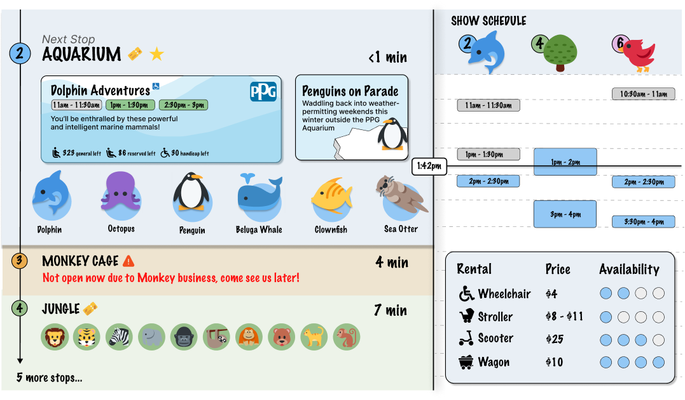
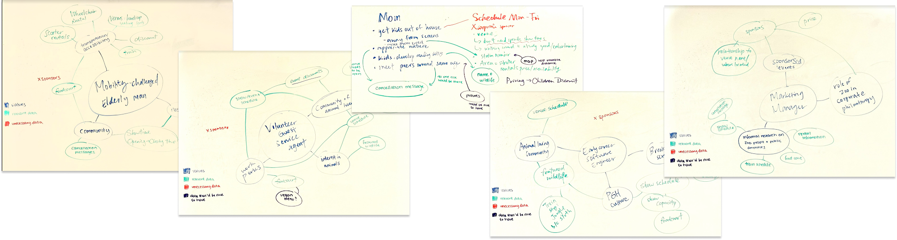
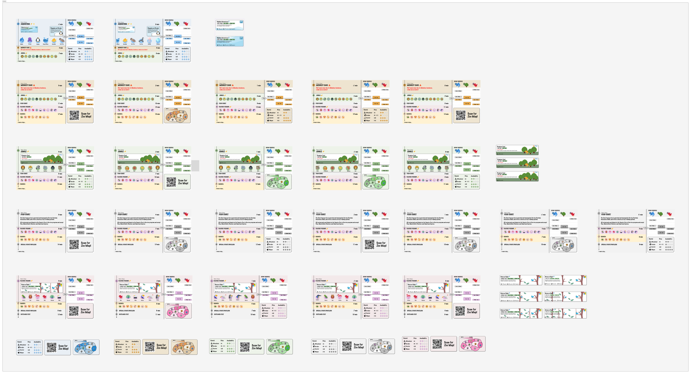

Increasing engagement and decreasing wait times at the zoo

01 / OVERVIEW
I worked as a designer in a team of three for 3 weeks, from October 2022 - November 2022
Satisfy the needs of various stakeholders while increasing overall engagement at the Pittsburgh Zoo
UX research, UI/UX design, motion, prototyping, pivoting ideas, pitching
Sketches, prototypes, motion components, pitch for the product pivot
TL;DR
The Pittsburgh Zoo & Aquarium has received a grant from an anonymous donor to increase visitors and engagement at the Zoo in response to 2+ years of pandemic. Restrictions include having only one screen and a ban on customer interaction. Completed as a class project for Interaction Design Studio.
02 / PROBLEM
As the pandemic situation improves, people are still hesitant to resume social activities such as visiting zoos. In response to this challenge, the CEO of Pittsburgh Zoo has tasked our team with designing a display that would attract more visitors and boost engagement. Our objective is to minimize wait times and increase interaction with the zoo's popular events. To achieve this, the CEO has identified five distinct stakeholders that the display should address.
“How might we minimize wait times and increase engagement at the Pittsburgh Zoo?”
03 / SOLUTION
In order to maximize views and increase visitor engagement, we strategically placed our display inside the zoo train. Our display provides information on upcoming stops, including event details, venue capacity, animal names, and sponsors. If users are intrigued by the information, they have the option to get off at the next stop. Additionally, our display includes a preview of the next few stations to keep users informed and interested, allowing customers to plan their next steps.
To help minimize wait times and keep guests informed, our display also includes venue capacity, density maps, and show schedules. We designed the display with a vibrant and playful aesthetic that aligns with the child-friendly atmosphere of the zoo. While parents read through the information, children can stay entertained with fun animations and animal-to-word matching games.
frame of the zoo monitor
04 / ANALYSIS
Before we could decide how to present the data to our users, we had to first understand it. We asked questions such as “does a user need to know how many shows there are per day at the Aquarium?” or “does the volunteer guest service agent need to know how long it takes for the train to get from station 1 to station 5?” We then mapped available data and metadata to each stakeholder, with a focus on mom and mobility-challenged elderly man customers. This allowed us to narrow our focus and exclude any unnecessary information, ensuring that our product is both comprehensive and effective in addressing our users' needs.
identifying relevant and unnecessary data for the stakeholders: mobility-challenged elderly man, volunteer guest service agent, mom, early career software engineer, and marketing manager.
05 / DESIGN
Our first prototype consisted of four sections: the train station, zoo map, venue schedule, and venue information. We planned to put it outside the train station for people to view while waiting for the train. However, during a class-wide critique, we realized that our display had the following problems:
The animation idea at the time was a train that changed the background image as it moved around the screen
Due to being unsatisfied with how well our display was meeting project goals, I proposed a pivot in direction to my team. I presented a re-analysis of our stakeholders’ needs and some preliminary sketches of a new idea that could better address user needs. One key difference was placing the display in the train.

The notes I shared with the team while proposing the pivot
The team agreed to the pivot and I lead the redesign efforts of our new display. We worked in a time crunch as the project presentation was in just two days after the pivot was proposed.
the new frames of our redesign
06 / REFLECTION
Don't sacrfice depth for breadth
We learned how important it is to focus on certain stakeholders and to only include what is needed on the screen. A clean display that best addresses the needs of one or two people is almost always better than a sloppy display trying to hit the needs of all five users.
Don't be afraid to pivot
I’ve learned that I should not be afraid to speak my mind and of change. I’ve also learned how important it is to communicate my ideas clearly, with visuals, to ensure the team is on the same page about our design goals.
08 / OTHERS